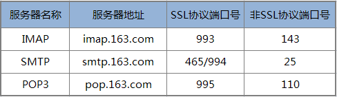

phpMailer es una clase de envío de correos de PHP muy potente, que permite configurar la dirección de envío, la dirección de respuesta, el asunto del correo, páginas HTML, adjuntar archivos, y es muy fácil de usar.
Características de phpMailer:
- 1. Incluir múltiples TO, CC, BCC y REPLY-TO en el correo.
- 2. Amplia aplicación multiplataforma, soporta servidores SMTP como Sendmail, qmail, Postfix, Gmail, Imail, Exchange, etc.
- 3. Soporta imágenes incrustadas, archivos adjuntos y correos HTML.
- 4. Funciones de depuración fiables y potentes.
- 5. Soporta autenticación SMTP.
- 6. Personalizar cabeceras de correo.
- 7. Soporta codificaciones 8bit, base64, binary y quoted-printable.
Métodos de instalación o descarga de phpmailer:
1. Descargar desde GitHub:https://github.com/PHPMailer/PHPMailer/
2. Instalar con Composer:
composer require phpmailer/phpmailer
Antes de enviar, es necesario tener tu propio servidor de correo. De hecho, para probar, lo más conveniente es usar un buzón gratuito que hayas solicitado; no necesitas montar tu propio servidor. Puede que tengas que configurar el servicio SMTP del buzón; la mayoría de los buzones públicos (163, QQ, etc.) lo tienen desactivado por defecto por seguridad.
La configuración del buzón de NetEase (163) es como se muestra a continuación:

La configuración relacionada del buzón de QQ es como se muestra a continuación:
| Buzón | Servidor POP3 (puerto 995) | Servidor SMTP (puerto 465 o 587) |
|---|---|---|
| qq.com | pop.qq.com | smtp.qq.com |
Por supuesto, además de los buzones de NetEase y QQ, otros buzones también son válidos. A continuación se muestra un ejemplo de código PHP:
Ejemplo
use PHPMailer\PHPMailer\PHPMailer;
use PHPMailer\PHPMailer\Exception;
require './src/Exception.php';
require './src/PHPMailer.php';
require './src/SMTP.php';
$mail = new PHPMailer(true); // Passing `true` enables exceptions
try {
//Configuración del servidor
$mail->CharSet ="UTF-8"; //Establecer la codificación del correo
$mail->SMTPDebug = 0; // Salida en modo depuración
$mail->isSMTP(); // Usar SMTP
$mail->Host = 'smtp.163.com'; // Servidor SMTP
$mail->SMTPAuth = true; // Permitir autenticación SMTP
$mail->Username = 'Nombre de usuario del buzón'; // Nombre de usuario SMTP, es decir, el nombre de usuario del buzón
$mail->Password = 'Contraseña o código de autorización'; // Contraseña SMTP; algunos buzones usan un código de autorización (por ejemplo, el buzón 163)
$mail->SMTPSecure = 'ssl'; // Permitir protocolo TLS o SSL
$mail->Port = 465; // Puerto del servidor 25 o 465, depende del soporte del servidor de correo
$mail->setFrom('xxxx@163.com', 'Mailer'); //Remitente
$mail->addAddress('aaaa@126.com', 'Joe'); // Destinatario
//$mail->addAddress('ellen@example.com'); // Se pueden añadir múltiples destinatarios
$mail->addReplyTo('xxxx@163.com', 'info'); // Al responder, especificar a qué buzón se envía la respuesta; se recomienda que coincida con el remitente
//$mail->addCC('cc@example.com'); // Con copia (CC)
//$mail->addBCC('bcc@example.com'); // Con copia oculta (BCC)
// Enviar archivo adjunto
// $mail->addAttachment('../xy.zip'); // Añadir archivo adjunto
// $mail->addAttachment('../thumb-1.jpg', 'new.jpg'); // Enviar archivo adjunto y renombrarlo
//Content
$mail->isHTML(true); // Si se envía en formato HTML; después del envío, el cliente puede mostrar directamente el contenido HTML correspondiente
$mail->Subject = 'Aquí está el asunto del correo'. time();
$mail->Body = '<h1>Aquí está el contenido del correo</h1>'. date('Y-m-d H:i:s');
$mail->AltBody = 'Si el cliente de correo no soporta HTML, se mostrará este contenido';
$mail->send();
echo 'Correo enviado con éxito';
} catch (Exception $e) {
echo 'Error al enviar el correo: ', $mail->ErrorInfo;
}
La interfaz después de enviar un correo con adjunto es la siguiente:

Fuente del artículo: https://www.liminghulian.com/article/98